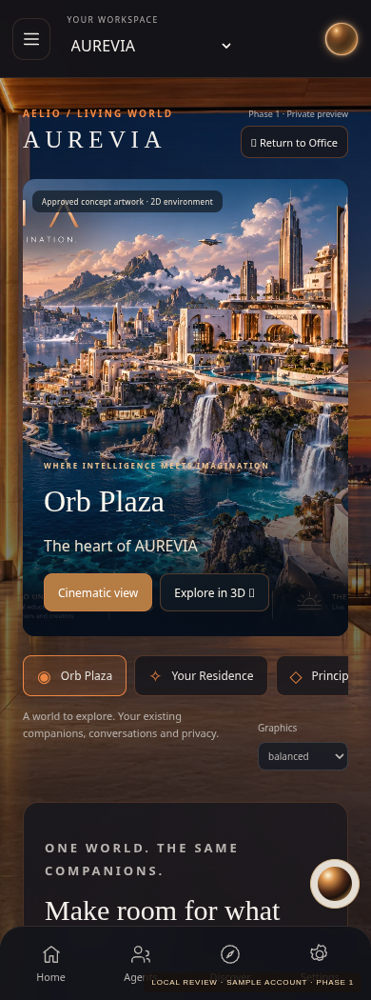
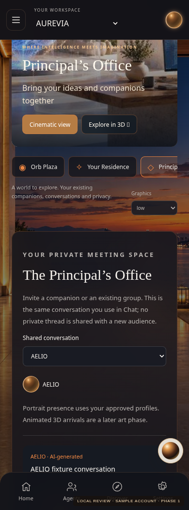
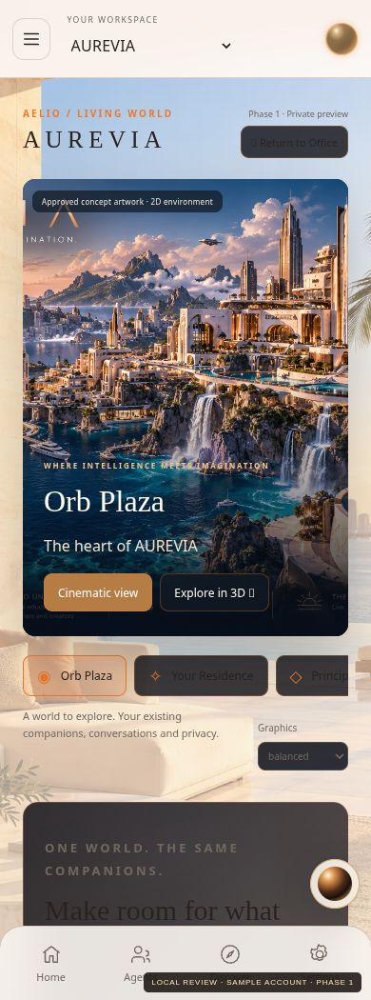

City · dark

Office · dark

City · light

Actual local renders · labeled sample account · approved reference imagery · no production deployment



3D is an early procedural study. Rigged avatars, University examinations and court workflows remain future phases.